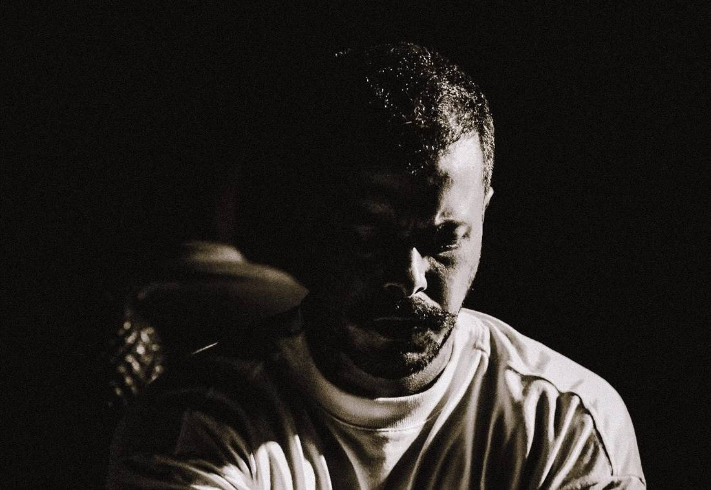
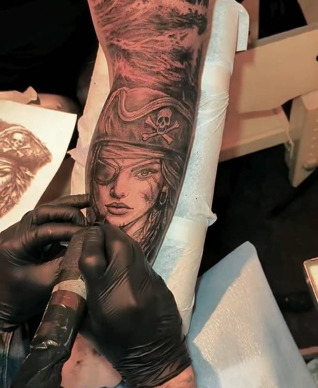
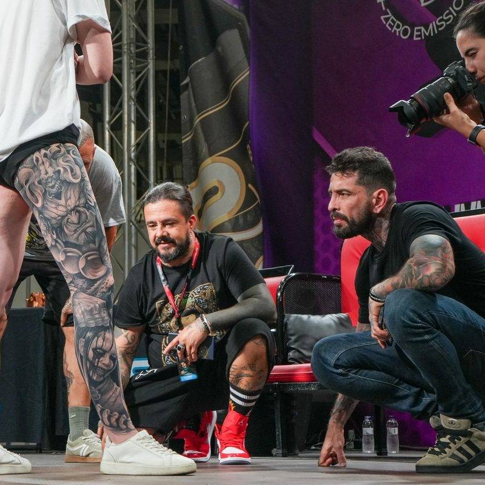
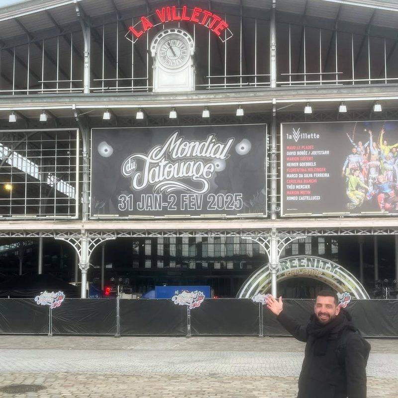
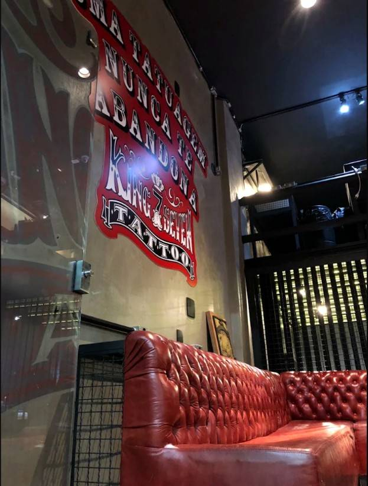

GansoGalvão
Realismo em preto e cinza. King Seven Tattoo Studio, Copacabana, Rio de Janeiro.
Duas décadas transformando histórias em arte permanente. Trabalhos realizados em mais de 20 países e presença nas principais convenções de tatuagem do mundo.
Leão
Antebraço, realismo animal. A primeira das 14 peças deste portfólio.
Portfólio
Toque em uma peça para ver a foto inteira e ampliar o traço.
Braço, sombras profundas
Braço, preto e cinza
Braço fechado, realismo
Costas, retrato feminino
Antebraço, fauna
Braço, detalhe em pedra
Ombro, composição
Antebraço, retrato
Antebraço, pelagem
Braço, projeto religioso
Braço fechado, oriental
Braço, retrato clássico
Mão, alto contraste

Rio de Janeiro
Vinte anos de agulha na pele
Ganso Galvão trabalha com realismo em preto e cinza há mais de vinte anos. Nesse tempo, tatuou em mais de vinte países e passou a frequentar o circuito internacional de convenções.
O trabalho parte de sombra, volume e textura. Cada projeto é desenhado para uma pessoa e para um lugar do corpo, da primeira conversa ao último traço.
Ele mede uma tatuagem pelo que ela mostra vinte anos depois, e não no dia em que fica pronta.

Como nasce uma tatuagem
Conversa e briefing
Você conta a ideia, a história por trás dela e onde quer a tatuagem. É disso que o desenho nasce.
Projeto
Desenho técnico com estudo de sombra, volume e proporção, pensado para envelhecer bem na pele.
Sessão
Traço firme e atenção a cada gradação de cinza, no estúdio e com hora marcada.
Pelo mundo

Espanha

Paris, França
Convenções
- Mondial du Tatouage Paris, 2026
- China Tattoo Convention Ásia, convidado
- Empire State Tattoo Expo Nova York
- Barcelona Tattoo Expo Espanha
Trabalhos realizados no Brasil, nos Estados Unidos, na França, na Espanha, na China, na Suécia e em outros países.

King Seven Tattoo Studio
Rua Francisco Sá, 95Copacabana, Rio de Janeiro, RJ
22080-010
- Atendimento só com hora marcada. Confirme o horário antes de vir.
- Material descartável e esterilização em todas as sessões.
- Metrô Cantagalo e estacionamento a poucos minutos.
“Uma tatuagem nunca te abandona.”
Lema pintado na parede do estúdio
Conte sua ideia
Três informações bastam para começar a conversa. Ao enviar, o WhatsApp abre com a mensagem pronta para você revisar.
WhatsApp 21 99301-8288
Instagram @gansogalvao e @king7tattoo